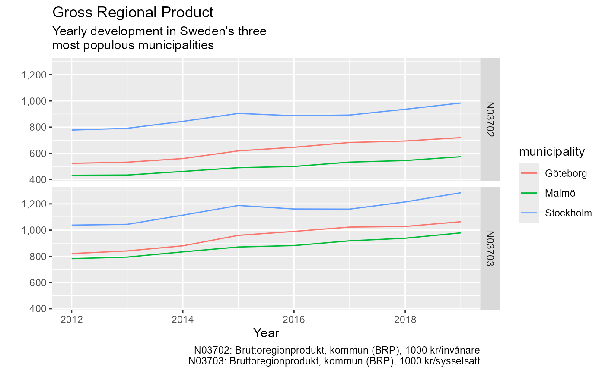

This vignette provides a quick start guide to get up and running with rKolada as fast as possible. For a more comprehensive introduction to the rKolada package, see Introduction to rKolada.
In this guide we walk you through five steps to download, inspect and search through Kolada metadata. We then use our search results to download data from Kolada and plot it.
1. Get metadata
Kolada contains five different types of metadata entities:
-
kpi: Key Performance Indicators -
municipality: Municipalities -
ou: Operating Unit, a subunit of municipalities -
kpi_groups: Thematic groupings of KPIs -
municipality_groups: Thematic groupings of municipalities
To obtain data using rKolada it is usually a good idea
to start by exploring metadata. rKolada comes with
convenience functions for each of the five above mentioned entities.
These functions are all names get_[entity]() and can be
called as follows. The cache parameter allows you to
temporarily store results on disk to avoid repeated calls to the API in
case you need to re-run your code:
kpis <- get_kpi(cache = FALSE)
munic <- get_municipality(cache = FALSE)If you have already familiarised yourself with the Kolada API
(e.g. by reading the official docs on GitHub)
you can access the full metadata API using
get_metadata().
2. Search metadata
Metadata tables are stored as regular tibbles so you can
start inspecting them by simply viewing them in RStudio. For example,
the KPI metadata we downloaded looks like this:
dplyr::glimpse(kpis)
#> Rows: 6,433
#> Columns: 13
#> $ auspices <chr> "E", "X", NA, NA, NA, "X", NA, "X", "X", NA, NA,…
#> $ description <chr> "Personalkostnader kommunen totalt, dividerat me…
#> $ has_ou_data <lgl> FALSE, FALSE, FALSE, FALSE, FALSE, FALSE, FALSE,…
#> $ id <chr> "N00003", "N00005", "N00009", "N00011", "N00012"…
#> $ is_divided_by_gender <int> 0, 0, 0, 0, 0, 0, 0, 0, 0, 0, 0, 0, 0, 0, 0, 0, …
#> $ municipality_type <chr> "K", "K", "K", "K", "K", "K", "K", "K", "K", "K"…
#> $ operating_area <chr> "Kommunen, övergripande", "Skatter och utjämning…
#> $ ou_publication_date <chr> NA, NA, NA, NA, NA, NA, NA, NA, NA, NA, NA, NA, …
#> $ perspective <chr> "Resurser", "Resurser", "Resurser", "Resurser", …
#> $ prel_publication_date <chr> "2024-04-04", "2024-04-04", NA, "2023-09-28", "2…
#> $ publ_period <chr> "2024", "2024", "2024", "2024", "2024", "2024", …
#> $ publication_date <chr> "2025-02-22", "2025-02-22", "2025-02-22", "2024-…
#> $ title <chr> "Personalkostnader, kr/inv", "Utjämningssystemet…But rKolada also comes with a set of convenience
functions to simplify the task of exploring KPI metadata.
kpi_search() filters down a list of KPIs using a search
term, and kpi_minimize() can be used to clean the KPI
metadata table from columns that don’t contain any information that
distinguish KPIs from each other:
# Get a list KPIs matching a search for "BRP" (Gross regional product)
kpi_res <- kpis %>%
kpi_search("BRP") %>%
# Keep only KPIs with data for the municipality level
kpi_search("K", column = "municipality_type") %>%
kpi_minimize(remove_undocumented_columns = TRUE, remove_monotonous_data = TRUE)
dplyr::glimpse(kpi_res)
#> Rows: 2
#> Columns: 5
#> $ id <chr> "N03702", "N03703"
#> $ title <chr> "Bruttoregionprodukt, kommun (BRP), 1000 kr/invånare"…
#> $ description <chr> "BRP dividerat med antal invånare i det geografiska o…
#> $ publ_period <chr> "2024", "2022"
#> $ publication_date <chr> "2025-02-22", "2025-01-09"Let’s say we are interested in retrieving data for four Swedish municipalities. We thus want to create a table containing metadata about these four municipalities:
munic_res <- munic %>%
# Only keep municipalities (drop regions)
municipality_search("K", column = "type") %>%
# Only keep Stockholm, Gothenburg and Malmö
municipality_search(c("Stockholm", "Göteborg", "Malmö"))
dplyr::glimpse(munic_res)
#> Rows: 3
#> Columns: 3
#> $ id <chr> "1480", "1280", "0180"
#> $ title <chr> "Göteborg", "Malmö", "Stockholm"
#> $ type <chr> "K", "K", "K"3. Describe KPIs
In addition to the information provided about every KPI in the
title and description columns of a KPI table,
kpi_bind_keywords() can be used to create a rough summary
of every KPI creating a number of keyword columns. The function
kpi_describe() can be used to print a huamn readable table
containing a summary of a table of KPIs. For instance, by setting the
knitr chunk option results='asis', the
following code renders a Markdown section that is automatically inluded
as a part of the HTML that renders this web page:
kpi_res %>%
kpi_bind_keywords(n = 4) %>%
kpi_describe(max_n = 1, format = "md", heading_level = 4, sub_heading_level = 5)N03702: Bruttoregionprodukt, kommun (BRP), 1000 kr/invånare
Description
BRP dividerat med antal invånare i det geografiska området. Bruttoregionprodukt (BRP) är den regionala motsvarigheten till bruttonationalprodukt (BNP) mätt från produktsidan: värden av all produktion av varor och tjänster i en region. Nyckeltalet visar den ekonomiska utvecklingen inom det geografiska området. Källa: SCB
4. Get data
Once we have settled on what KPIs we are interested in the next step
is to download actual data from Kolada. Use get_values() to
do this. To download data from the Kolada API you need to provide at
least two of the following parameters:
-
kpi: One or a vector of several KPI IDs -
municipality: One or a vector of several municipality IDs or municipality group IDs -
period: The years for which data should be downloaded.
The ID tags for KPIs and municipalities can be extracted using the
convenience functions kpi_extract_ids() and
municipality_extract_ids():
kld_data <- get_values(
kpi = kpi_extract_ids(kpi_res),
municipality = municipality_extract_ids(munic_res),
period = 1990:2019,
simplify = TRUE
)Setting the simplify parameter to TRUE,
again, makes results more human readable, by removing undocumented
columns and relabeling data with human-friendly labels.
5. Inspect and visualise results
Finally, time to inspect our data:
# Visualise results
library("ggplot2")
ggplot(kld_data, aes(x = year, y = value)) +
geom_line(aes(color = municipality)) +
facet_grid(kpi ~ .) +
scale_y_continuous(labels = scales::comma) +
labs(
title = "Gross Regional Product",
subtitle = "Yearly development in Sweden's three\nmost populous municipalities",
x = "Year",
y = "",
caption = values_legend(kld_data, kpis)
)